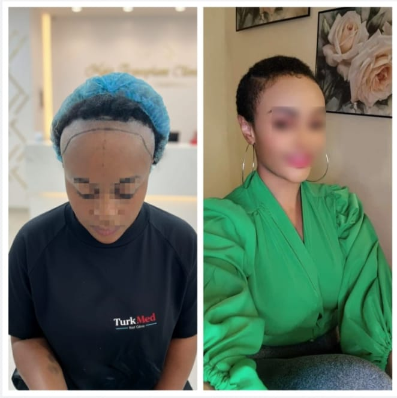
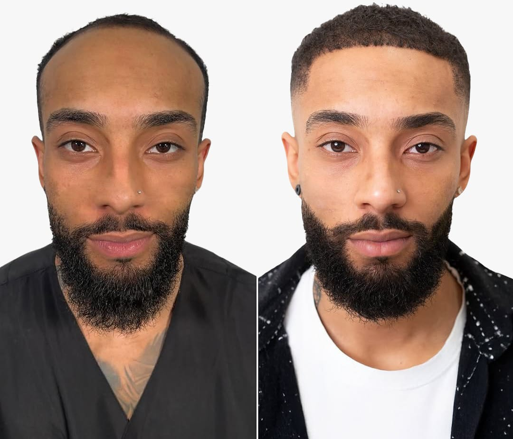

Leading the African continent in Turkish surgical artistry.
The destination for Sapphire FUE and DHI excellence in Nairobi.
Direct Istanbul Protocols
Certified Graft Survival
VIP Executive Suites
Unlike standard steel blades, our Sapphire blades are made from a single crystal, allowing for incisions that are 30% smaller.
The "Unshaven" revolution. Direct Hair Implantation allows for precise angle control without pre-opening channels.
We are the global leaders in 4C curly hair restoration. Our curved punches ensure the root is never damaged during extraction.

Advanced structural hairline optimization mapping targeting frontal recession lines.

Comprehensive temple density improvement and natural frontal crown frame reconstruction.
A master of Turkish surgical artistry with extensive experience in Sapphire FUE and DHI techniques. Known for his meticulous approach to "Featherline" hairline design, Dr. Başkaya leads our Nairobi clinical team with a commitment to 100% natural-looking results.
Slide the selector below to estimate your dynamic surgical requirements based on standard balding classification patterns.
At TurkMed, we believe a transplant is a life-changing event. Our state-of-the-art facility at **Valley View Office Park** is designed to provide a luxury experience that matches the quality of our surgery.
Everything you need to know before your procedure.